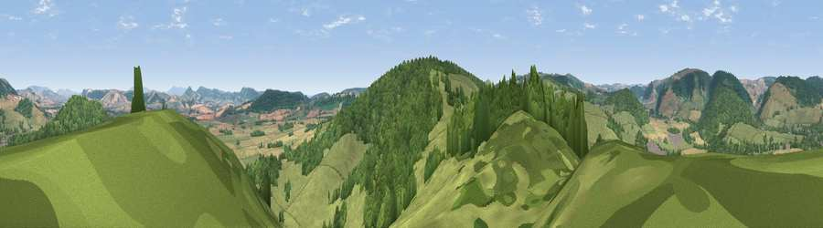

Viewpoint near Brampton Bryan
#8909 in England · top 25% of its area beats it · near Brampton BryanWhere it is
The exact computed spot (SO 35688 72125). Click the marker for map links.
The view, rendered

A 360° render of this exact spot computed from the terrain model, tree cover and land cover — summer colours, afternoon light, calibrated against photographs of famous viewpoints. Real trees, hedges and buildings will differ in detail.
The panorama
Grey silhouette: terrain skyline in each direction (720 bearings, Earth curvature and refraction included). Dashed green: skyline with trees (+15 m) and buildings (+8 m) as obstacles. Blue strip: how far the ground is visible on each bearing.
Where the view opens
Wedge length = distance to the farthest visible ground on that bearing (vegetation-aware). Rings at 10, 25 and 50 km.
What fills the view
44% grassland · 36% woodland · 20% cropland ·
Angular shares of the visible panorama (visual magnitude), not map area. Landscape diversity 0.47 (0–1 Shannon).
Key numbers
More beautiful places nearby
The staircase of upgrades: each row has a higher view potential than everything closer. Driving times are estimates from straight-line distance, calibrated against real road routing — check an actual route before setting out.
| Place | Direction | Drive | Score |
|---|---|---|---|
| Harley's Mountain | SSW · 3 km | ~8 min | 76.8 |
| Viewpoint near Hopton Castle | N · 5 km | ~11 min | 79.3 |
| Viewpoint near Leinthall Starkes | ESE · 9 km | ~18 min | 80.3 |
| Gatley Hill | ESE · 9 km | ~18 min | 82.6 |
| Viewpoint near Asterton | NNE · 17 km | ~30 min | 83.0 |
| Titterstone Clee | ENE · 24 km | ~39 min | 83.8 |
| The Lawley | NNE · 29 km | ~45 min | 85.8 |
| Viewpoint near Little Wenlock | NE · 45 km | ~65 min | 86.6 |
52.34341, -2.94546 · source: screening · position refined by local search. Computed location — check access rights before visiting.